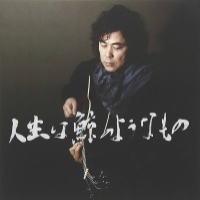

人生は鯨のようなもの
01. SEASON IN MONOTONE
02. 25時のバラード
03. WITH YOU
04. BURNING WOMAN ～友達の彼女～
05. 遠い夏（SELF cover）
作詞：横山 武 作曲：class 編曲：有賀 啓雄
06. 君がいた季節
作詞：池永 康記 作曲：日浦 孝則
07. また会えたね
08. 陽のあたる坂道
作詞：日浦 孝則・ATSUKO・池永 康記 作曲：日浦 孝則
09. いつかなんて絶対来ない
10. 人生は鯨のようなもの
作詞：日浦 孝則 作曲：日浦 孝則
11. HEY BABE